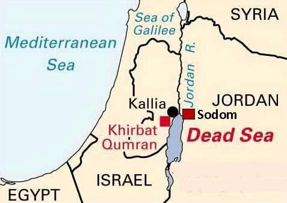
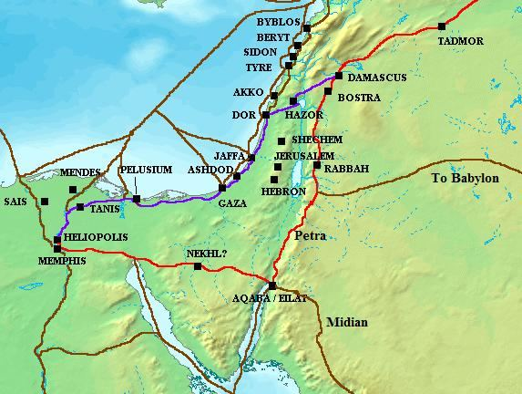

―Be quick in the race for forgiveness from your Lord and for a Jannaat, whose width is that of the Skies and Lands (this universe), prepared for the righteous…‖ [Al Quran 3:133]
"তোমার প্রভুর ক্ষমা এবং জান্নাতের জন্য দৌড়ে দ্রুত হও, যার প্রস্থ আকাশ ও জমিনের (এই মহাবিশ্ব) ধার্মিকদের জন্য প্রস্তুত করা হয়েছে..." [আল কুরআন 3:133]
Width of Jannaat is equal to the width of this universe (Skies and Lands), but its length is much bigger. People obeying Allah will live in Jannaat forever.
জান্নাতের প্রস্থ এই মহাবিশ্বের (আকাশ ও ভূমি) প্রস্থের সমান কিন্তু এর দৈর্ঘ্য অনেক বেশি। আল্লাহর আনুগত্যকারী লোকেরা চিরকাল জান্নাতে থাকবে।
Tell My servants that I am indeed the Oft–forgiving, Most Merciful, and that My penalty will be indeed the most grievous penalty. Section 10 of Chapter 15 [Verse 51-60]: Guests of Abraham
আমার বান্দাদের বলুন যে, আমি অবশ্যই ক্ষমাশীল, পরম করুণাময় এবং আমার শাস্তি হবে সবচেয়ে কঠিন শাস্তি। অধ্যায় 15 এর অধ্যায় 10 [শ্লোক 51-60]: আব্রাহামের অতিথি
Tell them about the guests of Abraham: When they entered his presence and said, "Peace!" he said, "We feel afraid of you!" They said: "Fear not! We give you glad tidings of a son endowed with wisdom." He said: "Do you give me glad tidings that old age has seized me! Of what then is your good news?" They said: "We give you glad tidings in truth; be not then in despair!" He said: "And who despairs of the mercy of his Lord, but such as go astray?" Abraham said: "What then is the business on which you (have come), O you messengers?" They said: "We have been sent to a people in sin, excepting the adherents of Lot—them we are certainly to save, all except his wife who we have ascertained will be among those who will lag behind."
তাদের ইবরাহীমের মেহমানদের সম্পর্কে বলুন: যখন তারা তার সামনে প্রবেশ করল এবং বলল, সালাম! তিনি বললেন, "আমরা তোমাকে ভয় পাই!" তারা বললঃ ভয় করো না, আমরা তোমাকে বুদ্ধিমান পুত্রের সুসংবাদ দিচ্ছি। তিনি বললেনঃ তুমি কি আমাকে সুসংবাদ দাও যে, বার্ধক্য আমাকে পাকড়াও করেছে! তাহলে তোমার সুসংবাদ কিসের? তারা বললঃ আমরা তোমাকে সত্যের সুসংবাদ দিচ্ছি, অতএব হতাশ হয়ো না। তিনি বললেন: "এবং কে তার পালনকর্তার রহমত থেকে নিরাশ হয়, কিন্তু যারা পথভ্রষ্ট হয়?" ইব্রাহীম (আঃ) বললেনঃ হে রসূলগণ, তোমরা (আসলে) সেই ব্যবসা কি? তারা বলল: "আমাদেরকে এমন এক সম্প্রদায়ের কাছে পাঠানো হয়েছে যারা পাপ করে, লূতের অনুগামীরা ব্যতীত, আমরা অবশ্যই তাদের রক্ষা করব, তার স্ত্রী ব্যতীত যাদেরকে আমরা নিশ্চিত করেছি তারা পিছিয়ে থাকবে।"
At length, when the messengers arrived among the adherents of Lot, he said: "You appear to be uncommon folk." They said: "Yea, we have come to you to accomplish that, of which they doubt. We have brought to you that, which is inevitably due, and assuredly we tell the truth. Then travel by night with your household, when a portion of the night (yet remains), and you go behind them in the rear let no one among you look back but pass on where you are ordered." And We made known this decree to him that the root of those should be cut off by the morning. The inhabitants of the city came in joy. Lot said: "These are my guests, disgrace me not, but guard against Allah and shame me not." They said: "Did we not forbid you from entertaining any of the people foreigners and strangers from us?" He said: "There are my daughters, if you must act." Verily, by your life, in their wild intoxication they were wondering blindly. But the blast overtook them before morning, and We turned upside down, and rained down on them brimstones hard as baked clay. Behold! In this are signs for those who by tokens do understand—and right on the high road. Behold! In this is a sign for those who believed.
দীর্ঘ সময়ে, যখন দূতগণ লূতের অনুসারীদের মধ্যে উপস্থিত হলেন, তিনি বললেন: "তোমরা অস্বাভাবিক লোক বলে মনে হয়।" তারা বলল: "হ্যাঁ, আমরা আপনার কাছে এসেছি সেই কাজটি করার জন্য, যে বিষয়ে তারা সন্দেহ করে। আমরা আপনার কাছে তা নিয়ে এসেছি, যা অনিবার্যভাবে প্রাপ্য, এবং নিশ্চিতভাবে আমরা সত্য বলছি। তারপর রাতের একটি অংশ যখন (এখনও বাকি থাকে) তখন আপনার পরিবারের সাথে রাত্রিবেলা ভ্রমণ করুন, এবং আপনি তাদের পিছনে পিছনে যান, আপনার মধ্যে কেউ যেন পিছন ফিরে না দেখে, যেখানে আপনাকে আদেশ করা হয়েছে।" এবং আমরা তাকে এই আদেশ জানিয়ে দিয়েছিলাম যে, সকালের মধ্যেই তাদের মূল কেটে ফেলতে হবে। আনন্দে মেতে ওঠেন নগরবাসী। লূত বললেনঃ এরা আমার মেহমান, আমাকে লাঞ্ছিত করবেন না, তবে আল্লাহ থেকে হেফাজত করবেন এবং আমাকে লজ্জিত করবেন না। তারা বললঃ আমরা কি তোমাদেরকে আমাদের বিদেশী ও অপরিচিত কাউকে আপ্যায়ন করতে নিষেধ করিনি? তিনি বললেন: "আমার মেয়েরা আছে, যদি তুমি অবশ্যই অভিনয় করো।" তোমার জীবনের কসম, তারা তাদের বন্য নেশায় অন্ধভাবে বিস্মিত ছিল। কিন্তু সকালের আগেই বিস্ফোরণ তাদের গ্রাস করল, এবং আমরা উল্টে পড়লাম এবং তাদের উপর সেঁকা মাটির মতো শক্ত গন্ধক বর্ষণ করলাম। দেখো! এতে তাদের জন্য নিদর্শন রয়েছে যারা টোকেন দ্বারা বোঝে-এবং ঠিক উঁচু রাস্তায়। দেখো! এতে নিদর্শন রয়েছে তাদের জন্য যারা ঈমান এনেছে।
Lot said, "There are my daughters, if you must act." This statement illustrates how desperate Lot was to save his people. However, they were not interested in his daughters. A gay person may gradually lose interest in women. The angels of destruction appeared as youthful boys, which caused "the inhabitants of the city [to] come in joy." The people of Lot became infatuated with the boys, as the verses say: "...in their wild intoxication, they were wondering blindly." One reason for this is that the chosen counterparts (boys) of a gay man are often fewer in number within a society. It is difficult for a gay person to change the sexual habits. Therefore, the number of gay individuals may gradually increase if there is no threat of punishment. Ultimately, vote-seeking democratic parties pass laws supporting homosexuality, using flawed logic that suggests resisting these changes will lead to even greater interest in gay culture. This is an age-old issue; some individuals have always had an interest in it. Only the threat of punishment in this life and the hereafter kept them in check. The people of Lot crossed this limit, resulting in their complete annihilation.
লূত বললেন, "আমার মেয়েরা আছে, যদি তুমি অবশ্যই অভিনয় করো।" এই বিবৃতিটি বোঝায় যে লোট তার লোকেদের বাঁচানোর জন্য কতটা মরিয়া ছিলেন। তবে, তারা তার মেয়েদের প্রতি আগ্রহী ছিল না। একজন সমকামী ব্যক্তি ধীরে ধীরে মহিলাদের প্রতি আগ্রহ হারিয়ে ফেলতে পারে। ধ্বংসের ফেরেশতারা যুবক বালক হিসাবে আবির্ভূত হয়েছিল, যার ফলে "শহরের অধিবাসীরা আনন্দে আসে।" লূতের লোকেরা ছেলেদের প্রতি মোহগ্রস্ত হয়ে পড়ে, যেমন আয়াত বলে: "...তাদের বন্য নেশায়, তারা অন্ধভাবে বিস্মিত ছিল।" এর একটি কারণ হল যে একজন সমকামী পুরুষের নির্বাচিত প্রতিরূপ (ছেলে) সমাজে প্রায়ই সংখ্যায় কম থাকে। একজন সমকামী ব্যক্তির পক্ষে যৌন অভ্যাস পরিবর্তন করা কঠিন। অতএব, শাস্তির হুমকি না থাকলে সমকামী ব্যক্তির সংখ্যা ধীরে ধীরে বাড়তে পারে। শেষ পর্যন্ত, ভোট চাওয়া গণতান্ত্রিক দলগুলি সমকামিতাকে সমর্থন করে আইন পাস করে, ত্রুটিপূর্ণ যুক্তি ব্যবহার করে যা এই পরিবর্তনগুলিকে প্রতিরোধ করার পরামর্শ দেয় সমকামী সংস্কৃতির প্রতি আরও বেশি আগ্রহের দিকে নিয়ে যায়৷ এটি একটি পুরানো সমস্যা; কিছু ব্যক্তি সবসময় এটি একটি আগ্রহ ছিল. শুধুমাত্র ইহকাল ও পরকালে শাস্তির হুমকি তাদের আটকে রেখেছে। লূতের সম্প্রদায় এই সীমা অতিক্রম করেছিল, ফলে তাদের সম্পূর্ণ বিনাশ ঘটেছিল।
FIGURE 15.12: Likely location of Sodom

চিত্র 15_12 / Figure 15_12
চিত্র 15.12: সডোমের সম্ভাব্য অবস্থান
চিত্র 15_12 / Figure 15_12
In ancient times, there were five cities near the Dead Sea: Sodom, Gomorrah, Admah, Zeboiim, and Bela (Zoar). Narrations from the Holy Bible and other Jewish accounts suggest that Sodom and Gomorrah were destroyed together: ―By the time Lot reached Zoar, the sun had risen over the land. Then the LORD rained down burning sulfur on Sodom and Gomorrah—from the LORD out of the heavens. Thus he overthrew those cities and the entire plain, destroying all those living in the cities—and also the vegetation in the land. But Lot‘s wife looked back, and she became a pillar of salt.‖ [Genesis 19 (23-26), Holy Bible]
প্রাচীনকালে, মৃত সাগরের কাছাকাছি পাঁচটি শহর ছিল: সদোম, গোমোরাহ, আদমাহ, জেবোইম এবং বেলা (জোয়ার)। পবিত্র বাইবেল এবং অন্যান্য ইহুদি বিবরণ থেকে বর্ণনা করা হয়েছে যে সদোম এবং গোমোরা একত্রে ধ্বংস হয়েছিল: - লোট যখন সোয়ারে পৌঁছেছিল, তখন সূর্য ভূমিতে উঠেছিল। তখন মাবুদ স্বর্গ থেকে সদোম ও ঘমোরার উপর জ্বলন্ত গন্ধক বর্ষণ করলেন। এইভাবে তিনি সেই শহরগুলি এবং সমস্ত সমভূমিকে উচ্ছেদ করলেন, নগরগুলিতে বসবাসকারী সমস্ত লোককে ধ্বংস করলেন - এবং সেই সাথে দেশের গাছপালাও। কিন্তু লোটের স্ত্রী ফিরে তাকালেন এবং তিনি লবণের স্তম্ভ হয়ে গেলেন।'' [জেনেসিস 19 (23-26), পবিত্র বাইবেল]
The Quran does not state that two cities were destroyed—only Sodom, where Lot was living, is mentioned as being destroyed. It is possible that Gomorrah was destroyed later, and its name was subsequently associated with Sodom by people over time. The method of destruction also differs in the Quran, as indicated by the verses under discussion: ―But the blast overtook them before morning, and We turned upside down, and rained down on them brimstones hard as baked clay.‖ It seems that the city was destroyed by an earthquake and a volcanic eruption rich in sulfur.
কোরানে বলা হয়নি যে দুটি শহর ধ্বংস হয়েছিল - শুধুমাত্র সদোম, যেখানে লোট বসবাস করছিলেন, ধ্বংস হওয়ার কথা উল্লেখ করা হয়েছে। এটা সম্ভব যে গোমোরাহ পরে ধ্বংস হয়ে গিয়েছিল, এবং সময়ের সাথে সাথে এর নামটি পরবর্তীকালে সদোমের সাথে যুক্ত হয়েছিল। কুরআনে ধ্বংসের পদ্ধতিটিও ভিন্ন, যেমনটি আলোচিত আয়াত দ্বারা নির্দেশ করা হয়েছে: "কিন্তু বিস্ফোরণ সকালের আগে তাদের গ্রাস করেছিল, এবং আমরা উল্টে গিয়েছিলাম এবং তাদের উপর সেঁকানো কাদামাটির মতো শক্ত গন্ধক বর্ষণ করেছিলাম।" মনে হয় শহরটি একটি ভূমিকম্প এবং আগ্নেয়গিরির অগ্ন্যুৎপাত দ্বারা ধ্বংস হয়েছিল।
And the Dwellers in the Wood were also wrongdoers, so We exacted retribution from them. They were both on an open highway, plain to see. Remarks:
আর কাঠের বাসিন্দারাও ছিল জালেম, কাজেই আমরা তাদের কাছ থেকে প্রতিশোধ নিয়েছিলাম। তারা দুজনেই একটি খোলা রাস্তার উপর ছিল, দেখতে সমতল। মন্তব্য:
The above verses do not mention the wrongdoing of the 'Dwellers of the Wood'. Some say that the Dwellers of the Wood were worshippers of a thicket called Aikah. They did not listen to the call of Shuaib and faced annihilation. But the verses under discussion mention them after the People of Lot and do not specify the sin for which they were destroyed. It seems from the expression that they were involved in the same wrongdoing (sodomy): ―And the Dwellers in the Wood were also wrongdoers, so We exacted retribution from them.‖ I think that the People of Gomorrah are called the Dwellers of the Wood in these verses. However, the People of Lot and the Dwellers of the Wood were not from the same time. The People of Lot were contemporaries of Abraham, while the Dwellers of the Wood were contemporaries of Moses—a time gap of about four hundred years.
উপরের আয়াতে 'কাঠের বাসিন্দাদের' অন্যায়ের কথা বলা হয়নি। কেউ কেউ বলেন যে কাঠের বাসিন্দারা আইকা নামক ঝোপের উপাসক ছিল। তারা শোয়াইবের আহবানে কান দেয়নি এবং ধ্বংসের সম্মুখীন হয়। কিন্তু আলোচ্য আয়াতে তাদের উল্লেখ করা হয়েছে কওম লূতের পরে এবং তারা যে পাপের জন্য ধ্বংস হয়েছিল তা নির্দিষ্ট করেনি। অভিব্যক্তি থেকে মনে হয় যে তারা একই অন্যায় (সডোমি) এর সাথে জড়িত ছিল: "এবং কাঠের বাসিন্দারাও অন্যায়কারী ছিল, তাই আমরা তাদের কাছ থেকে প্রতিশোধ নিয়েছি।" আমি মনে করি যে গোমোরার অধিবাসীদের এই আয়াতগুলিতে কাঠের বাসিন্দা বলা হয়েছে। যাইহোক, লূতের লোকেরা এবং কাঠের বাসিন্দারা একই সময়ের ছিল না। লোটের লোকেরা আব্রাহামের সমসাময়িক ছিল, যখন কাঠের বাসিন্দারা ছিল মোজেসের সমসাময়িক - প্রায় চারশ বছরের ব্যবধান।
Shuaib was a Midian Prophet:
শুয়াইব ছিলেন একজন মাদিয়ান নবী:
―To the Midian people We sent Shu'aib, one of their own brethren; he said: "O my people, worship God…‖ [Al Quran 7:85]
- মাদিয়ানবাসীর কাছে আমরা তাদের আপন ভাই শুয়াইবকে পাঠিয়েছিলাম; তিনি বললেন: "হে আমার সম্প্রদায়, আল্লাহর ইবাদত কর..." [আল কুরআন 7:85]
He (Shuaib) was sent to the Dwellers of the Wood after the destruction of Midian:
মাদিয়ান ধ্বংসের পর তাকে (শুয়াইব) কাঠের বাসিন্দাদের কাছে পাঠানো হয়েছিল:
―The Dwellers of the Wood rejected the Messengers. Behold, Shu'aib said to them: "Will ye not fear?‖ [Al Quran 26: 176–177] Moses took refuge among the Midianites in the house of Prophet Shuaib.
- কাঠের বাসিন্দারা রসূলদের প্রত্যাখ্যান করেছিল। শোয়াইব তাদের বললেন: "তোমরা কি ভয় পাবে না?" [আল কুরআন 26: 176-177] মুসা হযরত শুয়াইবের ঘরে মিদিয়ানদের মধ্যে আশ্রয় নিয়েছিলেন।
"…Then thou didst slay a man, but We saved thee from trouble, and We tried thee in various ways. Then didst thou tarry a number of years with the people of Midian. Then didst thou come hither as ordained, O Moses!‖ [Al Quran 020.040]
"...অতঃপর আপনি একজন ব্যক্তিকে হত্যা করেছিলেন, কিন্তু আমরা আপনাকে বিপদ থেকে রক্ষা করেছি, এবং আমরা আপনাকে বিভিন্নভাবে পরীক্ষা করেছি। তারপর আপনি মিদিয়ানবাসীদের সাথে কয়েক বছর অবস্থান করেছেন। তারপর আপনি এখানে নির্ধারিত হিসাবে এসেছেন, হে মূসা!” [আল কুরআন 020.040]
Probably shortly before the destruction of Midian, Moses was sent to Egypt, while Shuaib was sent to the Dwellers of the Wood. After the destruction of the Dwellers of the Wood, Shuaib moved further north, and his claimed tomb is located in Jordan. Therefore, if the People of Gomorrah and the Dwellers of the Wood were the same people, then the People of Lot and the People of Gomorrah were not destroyed at the same time. The verses connect both the People of Lot and the Dwellers of the Wood with a highway: ―They were both on an open highway, plain to see‖. Sodom was located beside a 5,000-year-old highway that ran from Damascus to Aqaba. From Aqaba, one could travel toward Yemen or Africa by camel caravan or ship. This highway connected to the Silk Route in the north and the road to Babylon in the south (see Figure 15.9). It was a crucial route in ancient times, significant to Persian emperors who ruled parts of Africa, as well as to the Greeks and Romans. FIGURE 15.13: The Ancient Highway
চিত্র 15_9 / Figure 15_9
সম্ভবত মিদিয়ান ধ্বংসের কিছুক্ষণ আগে, মুসাকে মিশরে পাঠানো হয়েছিল, আর শুয়াইবকে পাঠানো হয়েছিল কাঠের বাসিন্দাদের কাছে। কাঠের বাসিন্দাদের ধ্বংসের পর, শুয়াইব আরও উত্তরে চলে যান এবং তার দাবিকৃত সমাধি জর্ডানে অবস্থিত। অতএব, যদি গোমোরার লোকেরা এবং কাঠের বাসিন্দারা একই লোক হয়, তবে লূতের লোকেরা এবং গোমোরার লোকেরা একই সময়ে ধ্বংস হয়নি। আয়াতগুলি লূতের লোক এবং কাঠের বাসিন্দা উভয়কেই একটি মহাসড়কের সাথে সংযুক্ত করে: "তারা উভয়েই একটি খোলা রাজপথে ছিল, দেখতে সমতল"। সদোম একটি 5,000 বছরের পুরানো হাইওয়ের পাশে অবস্থিত ছিল যা দামেস্ক থেকে আকাবা পর্যন্ত চলেছিল। আকাবা থেকে কেউ উটের কাফেলা বা জাহাজে করে ইয়েমেন বা আফ্রিকার দিকে যেতে পারত। এই মহাসড়কটি উত্তরে সিল্ক রুট এবং দক্ষিণে ব্যাবিলনের রাস্তার সাথে যুক্ত (চিত্র 15.9 দেখুন)। প্রাচীনকালে এটি একটি গুরুত্বপূর্ণ পথ ছিল, যা আফ্রিকার কিছু অংশ শাসনকারী পারস্য সম্রাটদের জন্য, সেইসাথে গ্রীক এবং রোমানদের জন্য তাৎপর্যপূর্ণ। চিত্র 15.13: প্রাচীন মহাসড়ক
চিত্র 15_9 / Figure 15_9
Probably, the Dwellers of the Wood lived near the point where the 'Road to Babylon' connected with the highway.
সম্ভবত, কাঠের বাসিন্দারা সেই বিন্দুর কাছে বাস করত যেখানে 'রোড টু ব্যাবিলন' হাইওয়ের সাথে যুক্ত ছিল।
FIGURE 15.14: Likely location of Dwellers of Wood Section 13 of Chapter 15 [Verse 80-84]: Companions of the Stone

চিত্র 15_14 / Figure 15_14
চিত্র 15.14: 15 অধ্যায়ের 13 অধ্যায় [আয়াত 80-84] কাঠের বাসিন্দাদের সম্ভাব্য অবস্থান: পাথরের সঙ্গী
চিত্র 15_14 / Figure 15_14
The Companions of the Stone also rejected the apostles. We sent them Our Signs, but they persisted in turning away from them. They carved out houses from the mountains feeling safe, but the blast seized them of a morning and of no avail to them was all that they did!
পাথরের সাহাবীরাও প্রেরিতদের প্রত্যাখ্যান করেছিলেন। আমি তাদের কাছে আমার নিদর্শনাবলী প্রেরণ করেছি, কিন্তু তারা তাদের থেকে মুখ ফিরিয়ে নিল। তারা নিরাপদ বোধ করে পাহাড় থেকে ঘর খোদাই করেছিল, কিন্তু বিস্ফোরণ তাদের একটি ভোরে ধরেছিল এবং তাদের কোন লাভ হয়নি যা তারা করেছিল!
Many believe that the above verses refer to Mada'in Saleh, as the People of Mada'in Saleh (Thamud) carved houses into the mountains, as described in the following verses:
অনেকে বিশ্বাস করেন যে উপরের আয়াতগুলি মাদাইন সালেহকে নির্দেশ করে, কারণ মাদাইন সালেহ (সামুদ) এর লোকেরা পাহাড়ে ঘর খোদাই করেছিল, যেমনটি নিম্নলিখিত আয়াতগুলিতে বর্ণিত হয়েছে: